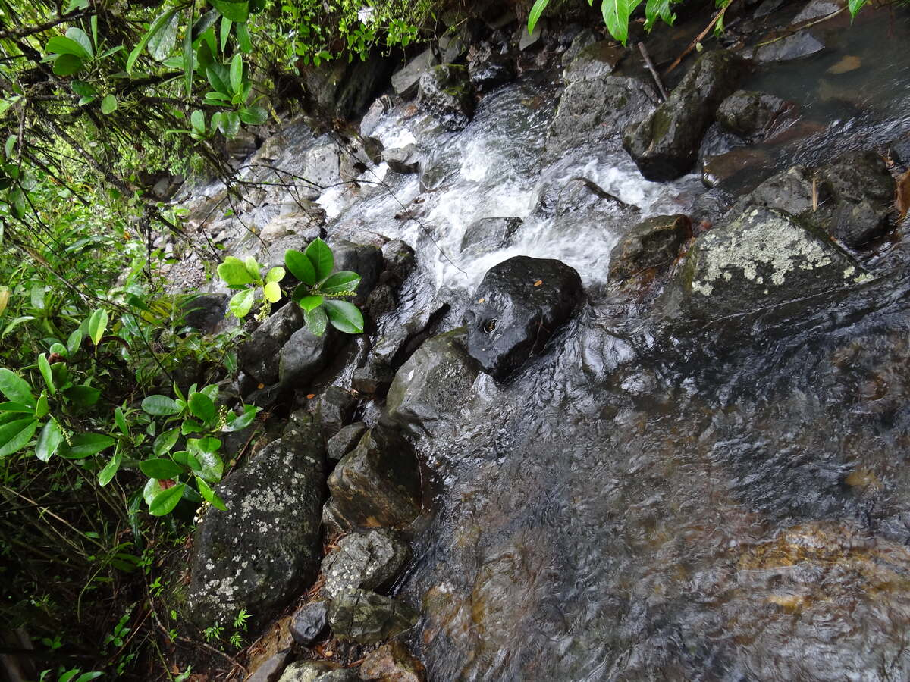

The Coqui: Puerto Rico's Tiny, Unmistakable Symbol

The moment the sun drops below the hills in Puerto Rico, a sound rises from every bush, garden, and forest patch on the island: co-KEE, co-KEE, co-KEE. To a first-time visitor it's startling, then enchanting, then so constant it becomes the island's ambient soundtrack. To anyone who grew up in Puerto Rico, it's simply the sound of home — so fundamental that its absence, more than its presence, is what gets noticed.
What Is a Coqui?
Coquis are small tree frogs belonging to the genus Eleutherodactylus, named for the Greek root meaning "free-toed." They are part of a family found throughout the Caribbean and Central and South America, but the species native to Puerto Rico are endemic — found nowhere else on Earth in the wild. Most Puerto Rican coquis are roughly the size of a large thumbnail. The common coqui (E. coqui), the most widespread species, is typically around an inch long.
What makes coquis biologically unusual is their reproductive strategy. Most frogs lay eggs in water, which hatch into tadpoles. Coquis skip the tadpole stage entirely. They lay eggs on land — under leaves, inside bromeliads, in the crevices of bark — and the eggs hatch directly into miniature froglets that are already fully formed. The father guards the eggs until they hatch, a behavior rare among frogs.
The Call That Names Them
The name "coqui" comes from the two-note call of the common coqui: a low "co" followed by a rising "KEE." Only males call, and they do so throughout the night to defend territory and attract mates. Each species in Puerto Rico has its own call variation — some are single-note, some are extended trills, some are so high-pitched they sit near the edge of human hearing. The Puerto Rican screech owl (múcaro) is one of the few animals on the island that reliably preys on them at night.
Endemic to Puerto Rico
The coqui species native to Puerto Rico evolved in isolation on the island over millions of years. They have been accidentally introduced to Hawaii, where the common coqui has become an invasive species — its calls in Hawaii, absent any cultural context, are considered a noise nuisance and have disrupted local ecosystems. In Puerto Rico, they have been part of the landscape so long that local flora has adapted around them.
Puerto Rico has around 16 to 17 coqui species, depending on taxonomic classification, ranging from sea level to the highest mountain forests. Some species are critically endangered due to habitat loss and introduced predators. The golden coqui (E. jasperi) was last definitively observed in the late 1980s and may be extinct.
Where to Hear Them
You don't need to go anywhere special. Coquis are island-wide. But El Yunque rainforest offers the densest populations and the greatest species diversity — on a night hike through the forest, the combined chorus can be overwhelming. Even urban gardens in San Juan typically host a few individuals after dark, audible through open windows on quiet streets.
The coqui appears on everything in Puerto Rico: souvenirs, murals, the logos of local businesses, and the coat of arms of the island's commonwealth government. It is the sound that tells every Puerto Rican living abroad that they are home.
Frequently Asked Questions
Are coqui frogs found anywhere else? The species native to Puerto Rico are endemic to the island. Some have been introduced to Hawaii, where they are considered invasive.
Where can I hear coqui frogs? Island-wide after dark, but El Yunque rainforest has the densest populations. Even hotel gardens in San Juan usually have a few calling at night.
Related Reading
- El Yunque: America's Only Tropical National Forest
- El Yunque Hiking Guide
- Wildlife Tours: Birds, Turtles & Marine Life
Hear the coqui in its rainforest home
See El Yunque Tours →